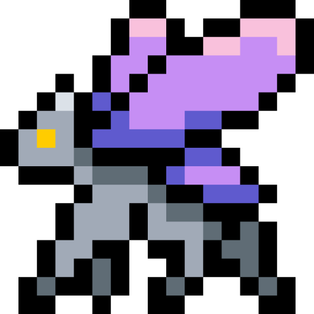
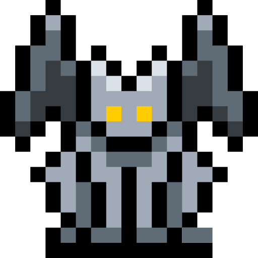

 vero
Brazilian software developer, focused on back-end and passionate about robust, scalable and well-architected systems. Working mainly with Go applications, I write clean and reliable code — and I'm always learning along the way.
 whoiam
I'm a developer who likes to create useful projects (or at least fun to program). I like to keep things simple, even when the stack gets complicated. This is where I gather some of the things I've built — ideas that made me write code out of curiosity, necessity, or pure pleasure. I have experience with critical systems, and I constantly use Go, Python, and automation tools. I like to learn about software architecture, cloud (especially AWS), and performance, but I'm also driven by music, fantasy books, manga, and good board games or PC games. If you want to exchange ideas or learn more about my work, my links are below.